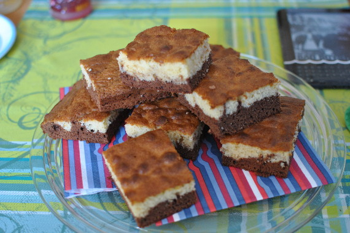

Chocolate Cake

- Zubereitung: ca. 30 Minuten
- Backen: ca. 30 Minuten
- Für eine Backform (34 cm x 24 cm)
Zutaten
- 150 g weiße Schokolade
- 150 g Zartbitter-Schokolade
- 150 g Butter
- 50 g Creme fraiche
- 5 Eier (Größe M)
- 300 g brauner Zucker
- 300 g Mehl
- 2 TL Backpulver
- Salz
Zubereitung
- Den Backofen auf 180° Celsius (Umluft: nicht geeignet) vorheizen. Die Backform mit Backpapier
auslegen.
- Die weiße und die Zartbitter-Schokolade in Stücke brechen und getrennt mit je 75 g Butter in je einer
Schüssel über einem heißen Wasserbad schmelzen und etwas abkühlen lassen. Die geschmolzene weiße Schokolade
mit Creme fraiche glatt rühren.
- Die Eier mit Zucker hellcremig aufschlagen. Das Mehl mit einer kräftigen Prise Salz sowie dem Backpulver mischen
und unterrühren. Den Teig halbieren. Eine Hälfte mit der weißen Schokomasse gut vermischen, die dunkle Schokomasse
unter die andere Hälfte mischen.
- Den dunklen Teig in die Form streichen. Den hellen Teig darauf verteilen. Mit einer Gabel leicht durchrühren,
so dass eine Marmorierung entsteht. Den Kuchen im Ofen auf der mittleren Schiene circa 30 Minuten backen.
Herausnehmen und auskühlen lassen.